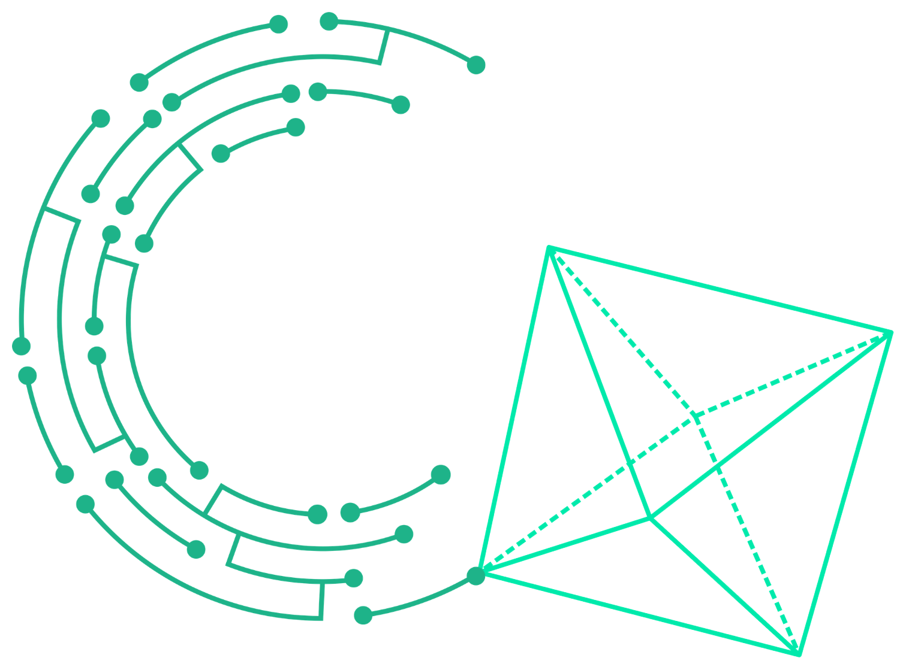
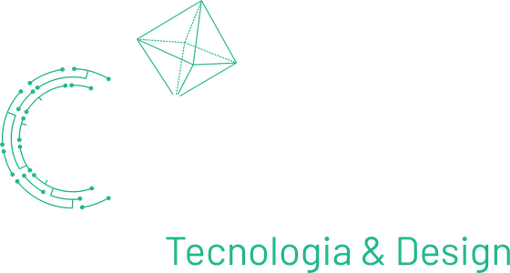

CriAugu é um estúdio de tecnologia e design que conecta estratégia de produto, UX engineering e desenvolvimento para transformar ideias complexas em sistemas que funcionam de verdade.

Discovery, arquitetura de produto e modelagem de negócio para ecossistemas digitais — da hipótese ao roadmap validado.
Pesquisa, arquitetura de informação, prototipação e design systems — com rigor de usabilidade e acessibilidade.
Arquitetura de software, ferramentas internas, automação e dashboards que conectam produto a decisão de negócio.
Frentes próprias em diferentes estágios — de exploração conceitual a ferramentas em uso ativo.
Seu especialista pessoal — PKM (gestão de conhecimento pessoal) com IA local. Aponte para o que você quer aprender — canal do YouTube, PDF, documento — e o Tusab absorve tudo e responde suas perguntas citando a fonte exata. Roda no seu computador, funciona offline, custo zero com Ollama.
Plugin Figma que automatiza o handoff entre design de interface e engenharia de dados — Power BI, Tableau, Looker — extraindo tokens visuais e especificações técnicas prontas para uso.
Motor de extração e estruturação de conhecimento que transforma um grande acervo de conteúdo em uma base consultável por agentes de IA, replicando tom de voz e contexto do criador original.
Estudo de design especulativo e estratégia de ecossistema: uma proposta de vertical C2C de aluguel de itens para um grande marketplace brasileiro. Projeto conceitual de portfólio, sem vínculo comercial com terceiros.
Conceito de aplicativo de gestão de tempo e foco com base em saúde mental — prioriza reduzir ansiedade em vez de gamificar produtividade, com feedback empático e ritual de fechamento diário.
A CriAugu nasceu para dar estrutura a um jeito de trabalhar que já existia: construir produtos digitais de ponta a ponta, unindo estratégia, design e tecnologia sob um mesmo padrão de qualidade — seja em iniciativas próprias, seja a serviço de outras empresas.
Conheça o trabalho de Augusto Alves BrasilNo canal da CriAugu, compartilhamos o processo real de construir produtos ponta a ponta usando IA — AI Building e Vibe Coding aplicados ao desenvolvimento de produto, sem promessa de curso ou fórmula pronta.
Vamos conversar sobre estratégia, design ou tecnologia — sem compromisso.
